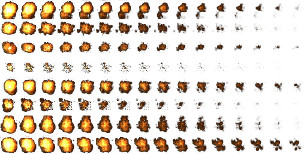

Il existe beaucoup de bibliothèques JavaScript permettant de créer des jeu (ou simulation) en 2D, mais la bibliothèque Phaser possède un avantage énorme par rapport à beaucoup de ses "concurrentes" : elle intègre un moteur physique.
Un moteur physique va vous permettre de gérer facilement, et surtout de manière réaliste, différents aspects : la vitesse d'un sprite, l'accélération d'un sprite, la gravitation, les collisions et les rebonds (cette liste est loin d'être exhaustive).
Dans un premier temps, il faut préciser le moteur physique qui sera utilisé (Phaser en propose plusieurs, mais nous n'étudierons qu'un) :
game.physics.startSystem(Phaser.Physics.ARCADE) ;
Si nous voulons que le moteur physique prenne en charge un sprite (monSprite par exemple), il faudra écrire :
game.physics.enable(monSprite,Phaser.Physics.ARCADE);
Repartons d'un exemple simple :
Saisissez, analysez et testez ce code
var game = new Phaser.Game(800,600,Phaser.AUTO,'content',{preload: preload, create: create,update:update});
function preload(){
game.load.image('smiley','asset/smiley.png');
}
function create(){
game.physics.startSystem(Phaser.Physics.ARCADE);
monSprite=game.add.sprite(400,300,'smiley');
monSprite.anchor.setTo (0.5,0.5);
game.physics.enable(monSprite,Phaser.Physics.ARCADE);
monSprite.body.velocity.x=40;
}
function update(){
}
Analyse du programme proposé dans le "À faire vous même 7.1"
game.physics.startSystem(Phaser.Physics.ARCADE);
game.physics.enable(monSprite,Phaser.Physics.ARCADE);
monSprite.body.velocity.x=40;
Sachant qu'il existe aussi un paramètre
monSprite.body.velocity.y
modifier le programme précédent pour que le sprite se déplace en diagonale.
Il est aussi possible de modifier la vitesse de rotation du sprite :
monSprite.body.angularVelocity
Pour l'instant le sprite quitte l'écran, mais il est possible de rendre les bords de la fenêtre de jeu "imperméable" au sprite "monSprite" en ajoutant la ligne suivante :
monSprite.body.collideWorldBounds = true ;
Modifier le code du "À faire vous même 7.2" pour que le sprite ne sorte plus de l'écran.
Comme vous pouvez le constater avec l'exemple du "À faire vous même 7.3", le sprite se coince au bord de l'écran, il est possible de lui "donner" la capacité de rebondir en ajoutant la ligne :
monSprite.body.bounce.set(1)
le 1 du "set(1)" correspond à ce que l'on appelle en physique un choc élastique (le choc s'effectue sans perte d’énergie). Si vous diminuez cette valeur, à chaque choc contre les "parois" le smiley perdra un peu d'énergie et finira par s’arrêter. Un "set(0)" correspond à la situation vu précédemment : le smiley se bloque contre les parois dès le premier choc.
Il est possible de différencier l'élasticité du choc selon x et selon y, pour cela il suffira par exemple d'écrire :
monSprite.body.bounce.x=0.5
monSprite.body.bounce.y=0.7
Modifier le code demandé dans le "À faire vous même 7.3" pour que le sprite rebondisse sur les bords (vous essayerez avec plusieurs valeurs "d'élasticités du choc").
Une des choses les plus compliquées à gérer dans un jeu est la détection des collisions. Ici aussi, le moteur physique de Phaser va vous êtes d'un grand secours.
Imaginons 2 sprites : "joueur" et "ennemi", pour gérer les collisions entre ces 2 sprites, il suffira d'écrire :
game.physics.arcade.collide(joueur, ennemi, maFonction);
Attention : la collision devant être testé à chaque image la méthode "game.physics.arcade.collide" vu ci-dessus devra se trouver dans la fonction "update".
Nous allons reprendre un "jeu" déjà programmé auparavant :
Il y aura à l'écran 2 sprites (2 smileys) : un contrôlé par le joueur (touches clavier) et un qui décrira une trajectoire rectiligne uniforme (rebond sur les bords). Le joueur devra "attraper" le plus rapidement possible le 2e smiley (l'ennemi).
Dans cette deuxième version, il faudra utiliser tout ce que nous venons de voir : vitesse, collision et rebonds contre les bords. "Interdit" d'utiliser l'incrémentation des coordonnées :
joueur.x=joueur.x+2;
Je précise aussi que la capture de "l'ennemi" devra entraîner l'explosion de ce dernier. Pour ce faire vous pourrez utiliser le spritesheet suivant :
pour info : taille des vignettes 64x64
Il est possible de gérer les collisions sans utiliser la fonction "maFonction" :
game.physics.arcade.collide(joueur,ennemi);
si nos 2 sprites se nomment "joueur" et "ennemi".
Il est même possible de modifier la masse des sprites avec l'attribut
ennemi.body.mass
Saisissez, analysez et testez ce code (n'hésitez pas à modifier la masse des sprites)
var game = new Phaser.Game(800,600,Phaser.AUTO,'content',{preload: preload, create: create,update:update});
function preload(){
game.load.image('smiley','asset/smiley.png');
}
function create(){
game.physics.startSystem(Phaser.Physics.ARCADE);
joueur=game.add.sprite(400,300,'smiley');
joueur.anchor.setTo (0.5,0.5);
game.physics.enable(joueur,Phaser.Physics.ARCADE);
joueur.body.collideWorldBounds = true ;
joueur.body.bounce.set(0.5);
joueur.body.mass=100;
ennemi=game.add.sprite(20,300,'smiley');
ennemi.anchor.setTo (0.5,0.5);
game.physics.enable(ennemi,Phaser.Physics.ARCADE);
ennemi.body.collideWorldBounds = true ;
ennemi.body.velocity.x=300;
ennemi.body.velocity.y=0;
ennemi.body.bounce.set(0.5);
ennemi.body.mass=10;
}
function update(){
game.physics.arcade.collide(joueur,ennemi);
}
Pour terminer avec cette partie, vous devez savoir que le moteur physique gère aussi très bien la gravitation. Pour qu'un sprite "subisse" la gravité, vous devez ajouter la ligne suivante :
monSprite.body.gravity.set(0,50);
le sprite "monSprite" subira la gravitation, les 2 paramètres "(0,50)" correspondent aux coordonnées du vecteur intensité de la pesanteur. Si vous n'êtes pas familier avec la notion de "vecteur intensité de la pesanteur", vous devez juste comprendre que le premier paramètre devra rester à zéro si vous voulez que votre sprite tombe verticalement. Plus le deuxième paramètre est grand, plus le sprite tombera "vite".
game.physics.arcade.collide(joueur, ennemi, maFonction);
Attention : la collision devant être testé à chaque image la méthode "game.physics.arcade.collide" vu ci-dessus devra se trouver dans la fonction "update".
Créez un programme permettant d'afficher un sprite en haut de la fenêtre de jeu. Ce sprite devra être sensible à la gravitation (et donc tomber) et devra rebondir sur le "sol" (bas de la fenêtre de jeu).
Écrivez un programme permettant d'afficher un sprite. Ce sprite sera positionné sur le "sol" (bas de la fenêtre de jeu). Un appui sur la flèche "HAUT" du clavier devra le faire "sauter". Le saut devra être réaliste : impossible de déclencher un nouveau saut tant que le sprite n'est pas revenu au sol.